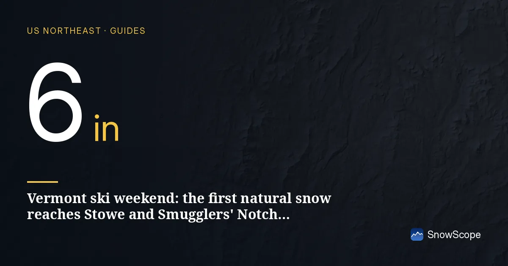

Vermont ski weekend: the first natural snow reaches Stowe and Smugglers' Notch, about 6 in (16 cm) by Monday
The first natural snow worth the name is heading for northern Vermont: about 6 in (16 cm) for Stowe and 6 in (15 cm) for Smugglers' Notch between Saturday and Monday, 5 in (12 cm) for Jay Peak. Southern Vermont gets less, around 3 in (7 cm) at Killington. Until then the open trails run on snowmaking; natural cover is only 1 in (3 cm) at Stowe.
See the live snow forecast for Vermont in the SnowScope appSnow depth, powder alerts and the 3D map, free.
North: Jay Peak, Smugglers' Notch, Stowe
The northern resorts sit closest to the storm track and get the most. By Monday our forecast puts 5 in (12 cm) of natural snow on Stowe's upper mountain and 5 in (12 cm) at Smugglers'; Jay Peak should reach 4 in (10 cm). That is not a base yet, but it turns the white ribbons of snowmaking into a white mountain.
For the date it is a normal start. At 2,480 ft (756 m) Stowe usually has 5 in (12 cm) of natural snow on November 27 and 9 in (24 cm) by mid-December.
| Resort | Natural snow today | Next 3 days | By Monday |
|---|---|---|---|
| Stowe | 1" | 6" | 5" |
| Smugglers' Notch | 1" | 6" | 5" |
| Jay Peak | 1" | 5" | 4" |
| Mad River Glen | 0" | 4" | 1" |
| Sugarbush | 1" | 4" | 3" |
| Killington | 0" | 3" | 0" |
Central: Mad River Glen and Sugarbush
Mad River Glen, which has no snowmaking on most of its terrain, needs natural snow more than anyone; it gets 4 in (10 cm) by Monday, still far from opening the Single Chair terrain. Sugarbush, next door, has about 4 in (9 cm) forecast and relies on its snowmaking trails for now.
South: Killington
Killington has almost no natural snow on the ground and 3 in (7 cm) forecast. Its season always starts on snowmaking: on a normal year the natural base reaches 30 cm (12 in) only in early January. The Killington snow page shows the daily numbers.
Why the northern resorts win
Northern Vermont sits right under the track of the cold air coming off the Great Lakes and down from Quebec, and its mountains pull extra snow out of every passing system. That is why Jay Peak and Smugglers' Notch get almost twice Killington's forecast this weekend, and why the northern resorts usually reach a 30 cm (12 in) natural base about three weeks earlier.
Height matters too: Stowe's lifts reach 3,648 ft (1,112 m), Jay's 3,825 ft (1,166 m), Killington's 4,140 ft (1,262 m). But the northern latitude does more than the extra feet, and lake-effect bands can make a big difference from one valley to the next.
For a Thanksgiving weekend trip, the rule is simple: go as far north as the drive allows, and expect the best snow on Sunday and Monday, after the system has passed.
Smugglers' Notch, on the other side of Mount Mansfield from Stowe, gets almost the same snow: 6 in (15 cm) forecast by Monday and 5 in (12 cm) on the ground by then. It is the quieter, family-oriented option of the two, and its natural snow on a usual Christmas, 14 in (36 cm) at 2,382 ft (726 m), is a little above Stowe's. Both resorts lean on snowmaking until mid-December, which is why their opening terrain is concentrated on the trails with the biggest guns.
Christmas outlook from history
Vermont Christmases are not guaranteed on natural snow alone. At Stowe the usual natural depth on December 25 is 14 in (36 cm) at 2,480 ft (756 m), and only 28% of 46 winters had 50 cm (20 in) by New Year. At Killington the figures are 9 in (23 cm) and 9%. That is why the big resorts open with snowmaking and why cold nights matter as much as storms in December.
Watch Stowe, Jay Peak and Smugglers Notch through the week.
Tips for skiers
- Head north this weekend: Jay, Smugglers' and Stowe get the most new snow.
- Expect firm snowmaking trails in the morning; the new snow softens them by midday.
- Bring layers: early-season Vermont days swing from mild to frigid within a weekend.
- More Northeast resorts on the US Northeast snow hub.
About these numbers
Snow numbers: SnowScope's snow map and forecast for today, and our record of 46 past winters at each resort (an estimate for the area, not the resort's own report).
Cite this report
For research, teaching or the press: the numbers and charts are free to reuse under CC BY 4.0 with this citation.
SnowScope (2026), Vermont ski weekend: the first natural snow reaches Stowe and Smugglers' Notch, about 6 in (16 cm) by Monday, https://snowscope.app/blog/en/2026/11/vermont-ski-weekend-first-natural-snow-stowe-jay-peak-smugglers-notch.html, accessed 2026-11-27
SnowScope (Atlas Labs). (2026, November 27). Vermont ski weekend: the first natural snow reaches Stowe and Smugglers' Notch, about 6 in (16 cm) by Monday. SnowScope snow reports. https://snowscope.app/blog/en/2026/11/vermont-ski-weekend-first-natural-snow-stowe-jay-peak-smugglers-notch.html
BibTeX
@misc{snowscope2026vermontskiweekendfirstna,
author = {{SnowScope (Atlas Labs)}},
title = {Vermont ski weekend: the first natural snow reaches Stowe and Smugglers' Notch, about 6 in (16 cm) by Monday},
year = {2026},
month = nov,
howpublished = {\url{https://snowscope.app/blog/en/2026/11/vermont-ski-weekend-first-natural-snow-stowe-jay-peak-smugglers-notch.html}},
note = {Published 2026-11-27 16:57 UTC; accessed 2026-11-27}
}· CC BY 4.0 · Methods, data and tools →
Follow Vermont
Free: a message when fresh snow is coming, and the forecast every morning.
More snow reports

As of 13 November, Killington's 12 cm is ahead of 42 past winters at this date; peak weeks typically arrive weeks 9, 11, and 10.

On 12 November, four US Northeast resorts have less snow than a year ago. Gore Mountain is down 6 cm (2 in). SnowScope snow history, 12 Nov 2026.

Sugarbush Resort tops the Northeast with 22 cm of new snow forecast over 14 days starting 13 November. First week brings most of the total.